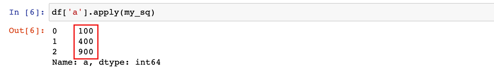
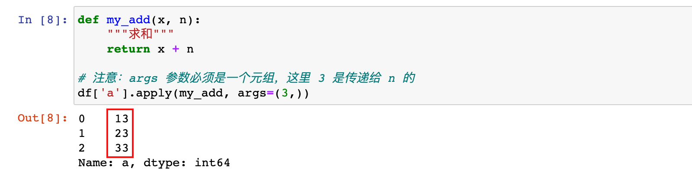
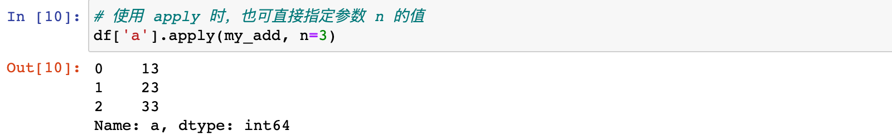
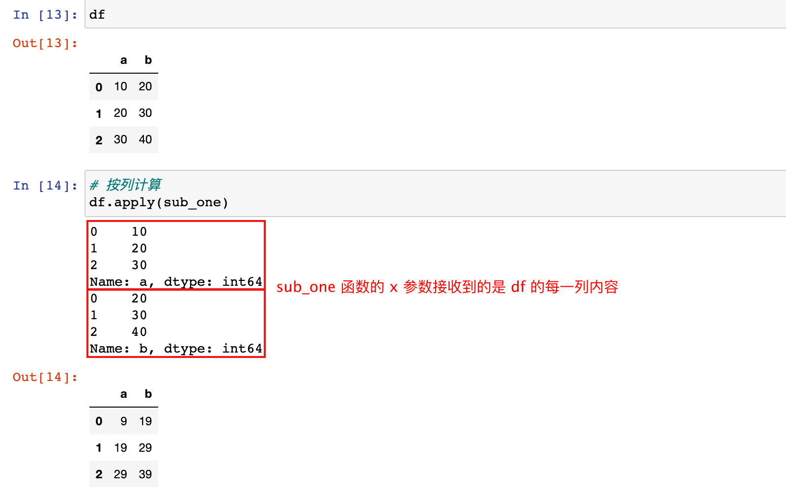
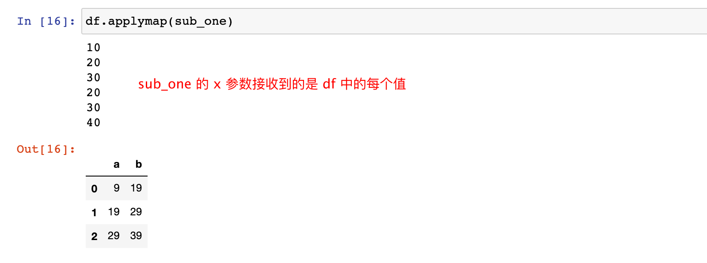
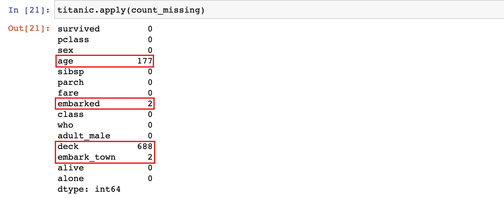
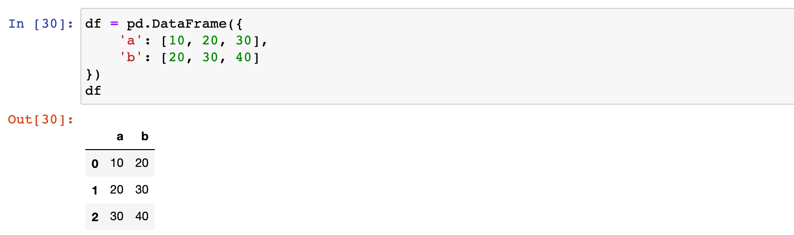
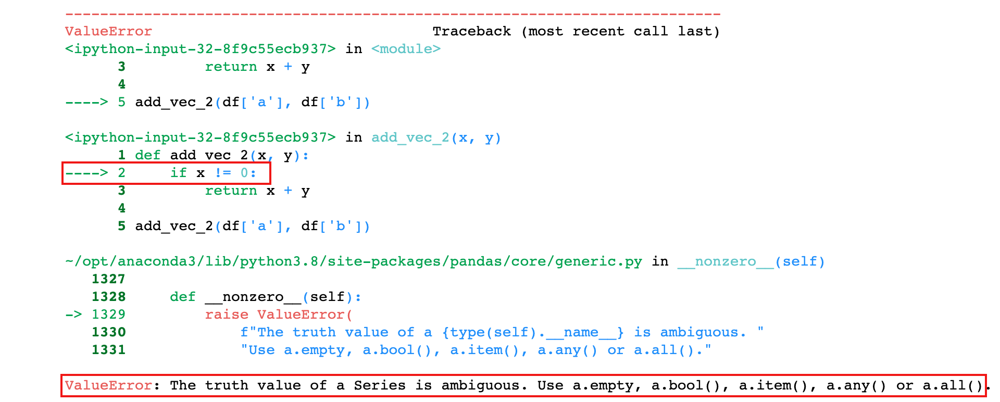
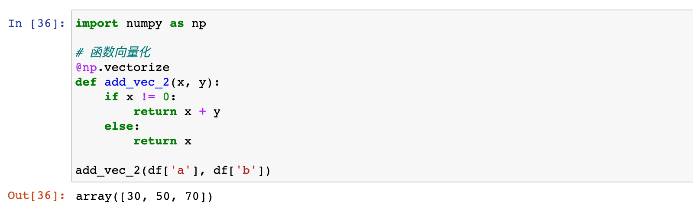
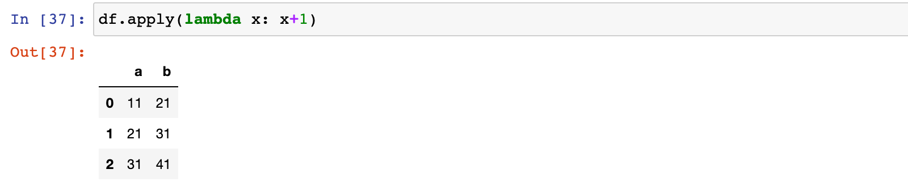

apply自定义函数
学习目标
- 掌握 apply 和 applymap 的用法
- 知道如何创建向量化函数
- 知道 lambda 表达式的好处
1. apply 函数简介
pandas 的 apply() 函数可以作用于 Series 或者整个 DataFrame，功能也是自动遍历整个 Series 或者 DataFrame，对每一个元素运行指定的函数。
1）pandas 提供了很多数据处理的 API，但当提供的 API 不能满足需求的时候，需要自己编写数据处理函数, 这个时候可以使用 apply 函数
2）apply 函数可以接收一个自定义函数，可以将 DataFrame 的行或列数据传递给自定义函数处理
3）apply 函数类似于编写一个 for 循环，遍历行、列的每一个元素, 但比使用 for 循环效率高很多
2. Series 的 apply 方法
Series 有一个 apply 方法，该方法有一个 func 参数，当传入一个函数后，apply 方法就会把传入的函数应用于Series 的每个元素.
1）创建一个 DataFrame 数据集，准备数据
df = pd.DataFrame({'a': [10, 20, 30], 'b': [20, 30, 40]})
df

2）创建一个自定义函数
def my_sq(x):
"""求平方"""
return x ** 2
3）使用 apply 方法进行数据处理
# 注意：series.apply(函数名)
df['a'].apply(my_sq)

4）series 的 apply 还可以接收多个参数
def my_add(x, n):
"""求和"""
return x + n
# 注意：args 参数必须是一个元组，这里 3 是传递给 n 的
df['a'].apply(my_add, args=(3,))

# 使用 apply 时，也可直接指定参数 n 的值
df['a'].apply(my_add, n=3)

3. DataFrame 的 apply 方法
DataFrame 的 apply 函数用法和 Series的用法基本一致，当传入一个函数后，apply 方法就会把传入的函数应用于 DataFrame 的行或列
3.1 按列执行
1）首先定义一个处理函数
def sub_one(x):
"""减1操作"""
print(x)
return x - 1
2）针对 df 进行 apply 操作，默认按列执行
# 按列计算
df.apply(sub_one)

3.2 按行执行
DataFrame 的 apply 函数有一个
axis参数，默认值为 0，表示按列执行；可以设置为axis=1，表示按行执行
1）针对 df 进行 apply 操作，设置按行执行
# 按行计算
df.apply(sub_one, axis=1)

3.3 每一个值都执行
DataFrame 还有一个 applymap 函数，applymap 也有一个 func 参数接收一个函数，针对 DataFrame 每个值应用 func 指定的函数进行操作，分别返回的结果构成新的 DataFrame 对象
注意：applymap函数是 DataFrame 独有的，Series 没有这个方法
# sub_one 应用于 df 中的每个元素
df.applymap(sub_one)

4. apply 使用案例
接下来我们通过一个数据集
titanic.csv，应用 apply 函数计算缺失值的占比以及非空值占比
4.1 加载数据初步查看缺失情况
1）加载titanic.csv数据集，通过df.info()函数来查看数据集基本信息，从中发现缺失值
titanic = pd.read_csv('./data/titanic.csv')
titanic.info()

4.2 完成自定义函数
通过观察发现有 4 列数据存在缺失值，age 和 deck 两列缺失值较多；此时我们就来完成几个自定义函数，分别来计算：
- 缺失值总数
- 缺失值占比
- 非缺失值占比
1）缺失值数目
def count_missing(vec):
"""计算缺失值的个数"""
return vec.isnull().sum()
2）缺失值占比
def prop_missing(vec):
"""计算缺失值的比例"""
return count_missing(vec) / vec.size
3）非缺失值占比
def prop_complete(vec):
"""计算非缺失值的比例"""
return 1 - prop_missing(vec)
4.3 计算每一列缺失值及非空值的占比
1）计算数据集中每列的缺失值
titanic.apply(count_missing)

2）计算数据集中每列的缺失值比例
titanic.apply(prop_missing)

3）计算数据集中每列的非缺失值比例
titanic.apply(prop_complete)

4.4 计算每一行缺失值及非空值的占比
1）计算数据集中每行的缺失值
titanic.apply(count_missing, axis=1)

2）计算数据集中每行的缺失值比例
titanic.apply(prop_missing, axis=1)

3）计算数据集中每行的非缺失值比例
titanic.apply(prop_complete, axis=1)

4.5 按缺失值数量分别统计有多少行
titanic.apply(count_missing, axis=1).value_counts()

5. 函数向量化
1）创建一个 DataFrame
df = pd.DataFrame({
'a': [10, 20, 30],
'b': [20, 30, 40]
})
df

2）此时我们创建一个函数，两个 series 计算求和
def add_vec(x, y):
return x + y
add_vec(df['a'], df['b'])

3）稍微修改一下函数，只加一个判断条件
def add_vec_2(x, y):
if x != 0:
return x + y
add_vec_2(df['a'], df['b'])

上面函数中，判断条件
if x != 0，x是series对象，是一个向量， 但20是具体的数值，int类型的变量，是一个标量。向量和标量不能直接计算，所以出错，这个时候可以使用numpy.vectorize()将函数向量化
4）在声明函数时，使用装饰器@np.vectorize，将函数向量化
import numpy as np
# 函数向量化
@np.vectorize
def add_vec_2(x, y):
if x != 0:
return x + y
else:
return x
add_vec_2(df['a'], df['b'])

6. lambda 函数
使用
apply和applymap对数据进行处理时，当处理函数比较简单的时候，没有必要创建一个函数， 可以使用lambda 表达式创建匿名函数
lambda匿名函数的优点如下：
- 使用 Python 写一些执行脚本时，使用 lambda 可以省去定义函数的过程，让代码更加精简
- 对于一些抽象的，不会别的地方再复用的函数，有时候给函数起个名字也是个难题，使用 lambda 不需要考虑命名的问题
- 使用 lambda 在某些时候让代码更容易理解
1）示例：df 中的数据加1
df.apply(lambda x: x+1)

总结
- Series 和 DataFrame 均可以通过 apply 传入自定义函数
- DataFrame 也可通过 applymap 传入自定义函数
- 有些时候需要通过 np 的 vectorize 函数才能进行向量化计算
- lambda 表达式可用于创建一些匿名的简单函数